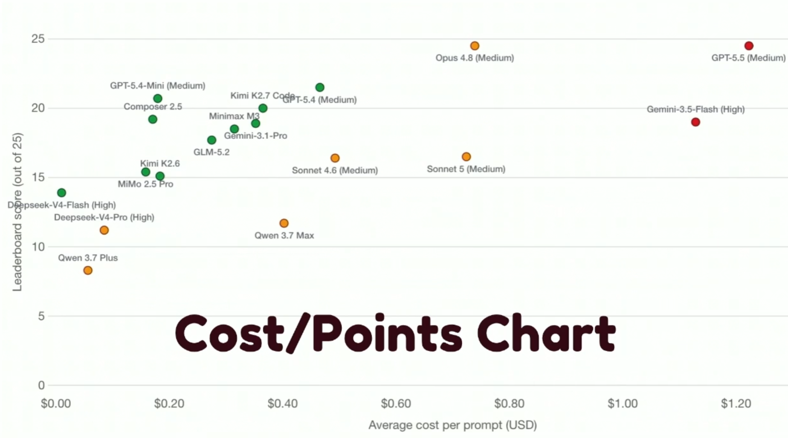

A trip report - in the room, and async
Some caught live in London, some watched async after the fact - same summit, two lenses. Live in London Watched Async mark which is which as we go.
What follows isn't a talk-by-talk recap. It's four threads that ran through all eight: a thesis about judgement, the practical craft of working with agents, what happens when you let them run at scale, and what it should all be doing for you as an engineer.
The frame everything else in this deck plays against
"Building the thing right is downstream of building the right thing." - Wayne Allan, quoted on Kent Dodds's podcast
Pure coding ability matters less for hitting targets that actually matter. The rest of this deck is what that looks like in practice - and it keeps circling back to this same idea.
Three practical layers of actually working with agents

Opus and GPT still lead on raw quality, but cost more. Bottom line, in his own words: "it depends."
Faros AI, 2026 - 22,000 developers surveyed
The trap: "plausible code" - pipeline green, linter green, looks right, so why review it at all?
What becomes possible once the guardrails are trusted
prompt.md for
three straight months.Across both talks, the same load-bearing idea: autonomous agents need a deterministic signal of success to steer by. Tests are that signal - without them, "loop engineering" is just hoping at scale.
Verification matters more than autonomy. The goal was never removing the human - it was moving the human from steering every step to setting the goals and the checks.
So what does this mean for how I work?
Every talk here pointed at the same thing from a different angle: pure coding ability matters less now, judgement matters more. That's true for the big calls (what's worth building) and the small ones (which model for which job, where to put a guardrail, when to trust an agent to run unattended).
The common thread I keep landing on is verification over autonomy - deterministic checks, the right model for the right stage, a different model reviewing than wrote it, tests as the signal an agent steers by. None of that is about slowing agents down. It's what makes trusting them further actually earned instead of assumed.
What I'm taking forward: keep building things and letting some of them fail, since that's still the only way I know to sharpen judgement. And keep asking AI what my options are, not just for the answer - that's the difference between it doing my job and it making me better at it.